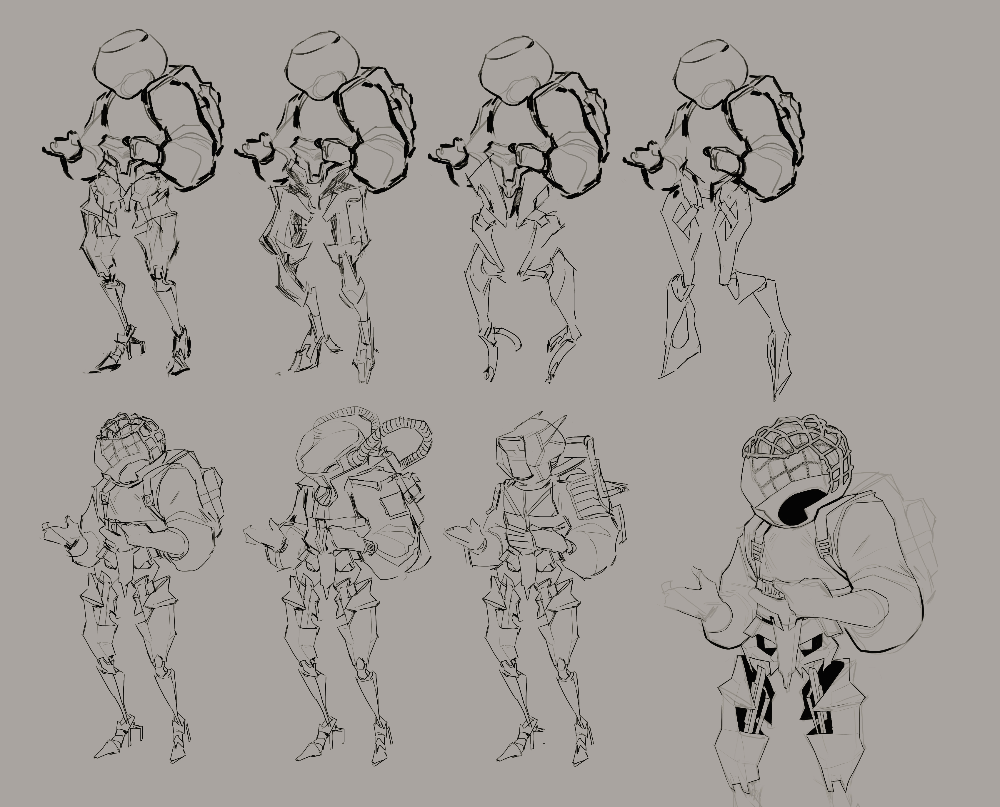
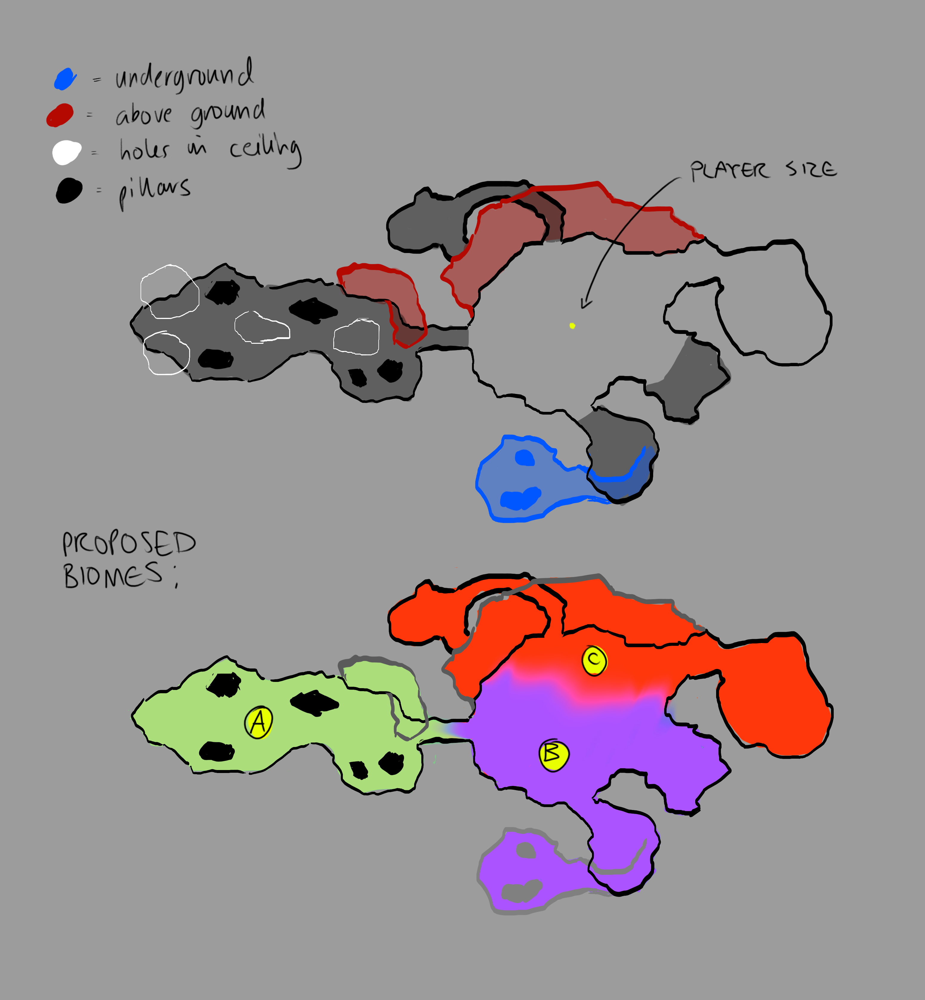
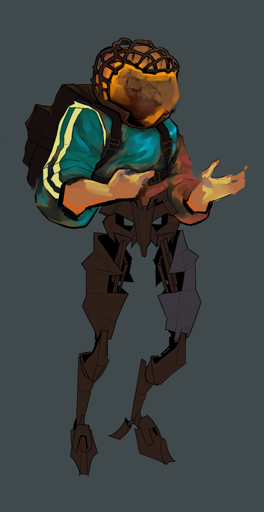
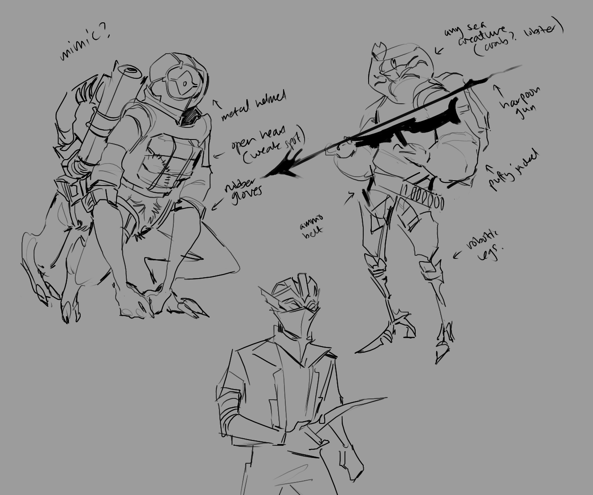
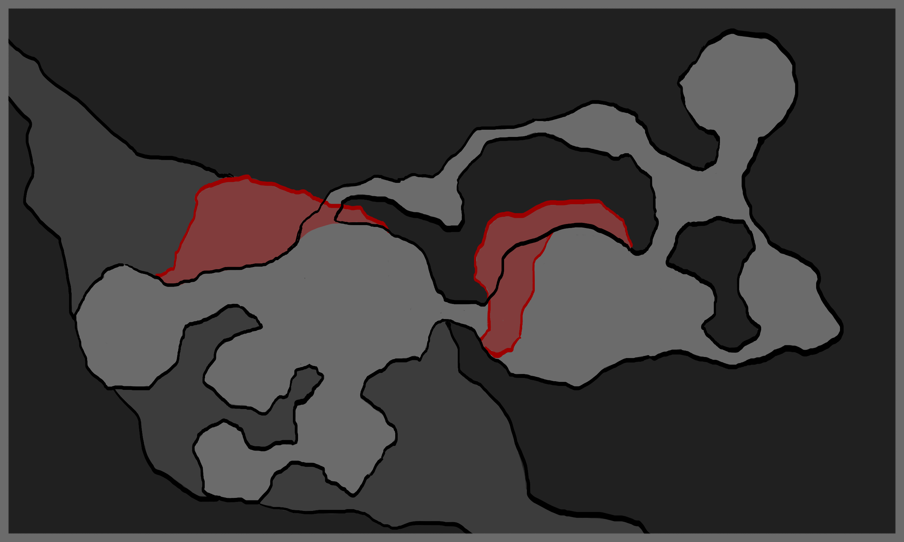

"On a deserted planet in deep space, violent and bloodthirsty creatures roam the landscape wreaking havoc, crawling in the canyons, chasms and trenches that scar the planet’s surface.
An anonymous entity has contracted any mercenary brave enough to hunt and kill the native monsters on this hellhole of a world. The competition and prize money is appealing enough, but there are also whispers of a dangerous disease that has infected the planet to its core.
As a money hungry mercenary with a taste for adventure, an unexplored and uninhabitable planet with plenty of mysterious game sounds like the perfect gig! Just make sure you dont perish like all the others."

As the lead designer of our studio project, I took the reigns on most of stylisation choices. The planet the game takes place on has multiple biomes, which the teams designers conceptualised as a group task, however the VSD focuses in on one specific biome.
The biome the group selected harkens to oceanic themes, as well as astronautical exploration, a new imagining of a planet that sustains deadly life. The team wanted the setting to feel teeming with fauna and flora, but with a sinister and aggressive undertone.
The biome would be prone to dampness, and so I looked at examples of moss/shrubbery/fungi to seek inspiration for environment assets. The team wanted the area to feel submerged, with a disequilibrium of gravity and lighting, without necessarily being under the water.




